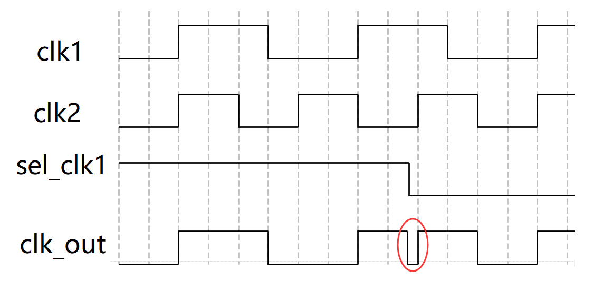

Due to various application scenario constraints, chips often need to switch between different clock sources under different applications during operation. For example, low-power and high-performance modes require low-frequency and high-frequency clocks, respectively. The two clock sources may be from the same source and synchronous, or they may be unrelated. Directly using selection logic for clock switching will likely cause glitches in the divided clock signal, so clock switching logic also requires special handling.
Clock Switching Problem
The circuit diagram of directly using selection logic to switch clocks is shown below.


Clock Switching Scheme
Switching clocks when the two levels are opposite will definitely produce glitches; when the levels are the same, even if no glitch is produced, the period or duty cycle of the first clock after switching is not ideal. Therefore, to avoid glitches, the clock switching should be performed when both clocks are at low level.
A typical clock switching circuit is shown below.
This circuit uses the falling edge of the clock to buffer the clock select signal sel_clk1. Meanwhile, one clock select signal provides feedback control for the other clock, ensuring that only one clock is active at any time. Finally, an OR operation combines the two clock paths to complete the clock switching process.

The waveform diagram of using the above circuit to complete clock switching (clk1->clk2) is shown below.
As can be seen from the figure, when switching from clk1 to clk2, clk1 is turned off first, then clk2 is turned on. Since the clock select signal is synchronized to the falling edge of the clock, no glitches will occur during the switching process.

The waveform diagram of switching from clk2 to clk1 is shown below.

Considering that the select signal may be an asynchronous signal, two stages of flip-flops need to be added before the buffer flip-flop of the clock select signal for synchronization to reduce the propagation of metastability. The structure diagram is as follows. This clock switching circuit is more universal.

Clock Switching Design
A universal and safe clock switching logic description is as follows.
Example
input rstn ,
input clk1,
input clk2,
input sel_clk1 , // 1 clk1, 0 clk2
output clk_out
);
reg [2:0] sel_clk1_r ;
reg [1:0] sel_clk1_neg_r ;
reg [2:0] sel_clk2_r ;
reg [1:0] sel_clk2_neg_r ;
//Use 3-cycle buffering to synchronize the AND operation between the other clock control signal and this clock control signal
always @(posedge clk1 or negedge rstn) begin
if (!rstn) begin
sel_clk1_r <= 3'b111 ; //Note the default value
end
else begin
//sel clk1, and not sel clk2
sel_clk1_r <= {sel_clk1_r[1:0], sel_clk1 & (!sel_clk2_neg_r[1])} ;
end
end
//On the falling edge, use 2-cycle buffering for the clock select signal
always @(negedge clk1 or negedge rstn) begin
if (!rstn) begin
sel_clk1_neg_r <= 2'b11 ; //Note the default value
end
else begin
sel_clk1_neg_r <= {sel_clk1_neg_r[0], sel_clk1_r[2]} ;
end
end
//Use 3-cycle buffering to synchronize the AND operation between the other clock control signal and this clock control signal
always @(posedge clk2 or negedge rstn) begin
if (!rstn) begin
sel_clk2_r <= 3'b0 ; //Note the default value
end
else begin
//sel clk2, and not sel clk1
sel_clk2_r <= {sel_clk2_r[1:0], !sel_clk1 & (!sel_clk1_neg_r[1])} ;
end
end
//On the falling edge, use 2-cycle buffering for the clock select signal
always @(negedge clk2 or negedge rstn) begin
if (!rstn) begin
sel_clk2_neg_r <= 2'b0 ; //Note the default value
end
else begin
sel_clk2_neg_r <= {sel_clk2_neg_r[0], sel_clk2_r[2]} ;
end
end
//When performing clock logic operations, a specific process cell library is generally used.
//Here, Verilog's built-in logic gate cells are used instead
wire clk1_gate, clk2_gate ;
and (clk1_gate, clk1, sel_clk1_neg_r[1]) ;
and (clk2_gate, clk2, sel_clk2_neg_r[1]) ;
or (clk_out, clk1_gate, clk2_gate) ;
endmodule
The testbench description is as follows, mainly generating the select signal for asynchronous clocks.
Example
module test ;
reg clk_100mhz, clk_200mhz ;
reg rstn ;
reg sel ;
wire clk_out ;
always #(2.5) clk_200mhz = ~clk_200mhz ;
always @(posedge clk_200mhz)
clk_100mhz = #1 ~clk_100mhz ;
initial begin
clk_100mhz = 0 ;
clk_200mhz = 0 ;
rstn = 0 ;
sel = 1 ;
#11 rstn = 1 ;
#36.2 sel = ~sel ;
#119.7 sel = ~sel ;
end
clk_switch u_clk_switch(
.rstn (rstn),
.clk1 (clk_100mhz),
.clk2 (clk_200mhz),
.sel_clk1 (sel),
.clk_out (clk_out));
initial begin
forever begin
#100;
if ($time >= 10000) $finish ;
end
end
endmodule
The simulation results are as follows. It can be seen that no glitches are generated when clocks switch to each other, but there is a delay.